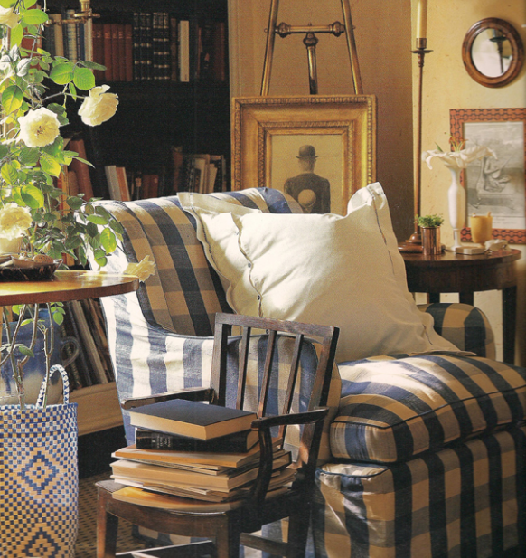

.png)
.PNG)
.PNG)
.PNG)
.PNG)
.PNG)
.JPG)
.JPG)
.PNG)
.PNG)


It’s another schoolday! So far we have discussed schoolhouses, chalkboards, schoolhouse pendant lights, and today I thought we might look at the trend of using school furniture in our homes. Is it just a trend, or is it a classic? What do you think? I truly don’t know, but these schoolhouse chairs are everywhere (including my dining room. 🙂 ) Aren’t these little green ones precious?
Or perhaps you only need one in your living room?crushculdesac.tumblr.com
Or how about a bigger version at the dining room table?
Chairs aren’t the only pieces of schoolhouse furniture being used in homes today. Check out these card catalogs from school libraries.
What do you think of using school lockers in your home? I’m sure you’ve seen them being used in many rooms – especially rooms for children. We have a small table styled to look like an old locker in our boys’ bedroom, but I would love to have a whole wall of them in there like some of these.
This room seems to be the epitome of schoolhouse style with its vintage lockers and large assortment of globes.
It can sometimes be difficult to find the authentic pieces of schoolhouse furniture. Not to worry though. Many places carry pieces that look like the originals. So you can still add the schoolhouse element without having to hunt through antique shops. Target and Pottery Barn Kids both carry schoolhouse chairs. If you really want that vintage look (and are not worried about a budget) Restoration Hardware is your place to go – especially their children’s line, rhbaby and child. That’s where you will find…
a school cafeteria play table…. rhbabyandchild.com
rhbabyandchild.com
a schoolhouse play table with school chairs…. rhbabyandchild.com
rhbabyandchild.com
old school lockers…. rhbabyandchild.com
rhbabyandchild.com
a double schoolhouse desk…. rhbabyandchild.com
rhbabyandchild.com
and a single desk that looks almost identical to my teacher desk at school (just smaller. 🙂 )
Even Restoration Hardware itself, not their children’s store, is jumping on the schoolhouse trend with this basket.
So do you think using schoolhouse furniture in our homes is just a temporary trend,
or do you view it more as a classic that will be here for a long time?


.PNG)
What a fun theme and a good question about if this style is here to stay. I suppose as us Baby Boomers age our childhood things will become desired. This post got me thinking about my first two years of elementary school that took place in a two room schoolhouse and I am not that old!! By third grade our new K-6 school had opened (and I safely walked a mile to school each day). Both schools had this sturdy wooden furniture. I have a photo of the two room school which was torn down at some point. BTW, my first grade teacher was scary but I loved my second grade one.
——————————————————————–
Barbara – That is so cool about a two room schoolhouse. Wow! I bet the wooden furniture was similar to the Restoration Hardware copies. I thought one of my elementary teachers was scary, but I am not going to say which grade. She is still around and might read this!! Ha ha. I WISH my students thought I was scary, but it is too late for that. 🙂
Kelly
Kelly,
Another fabulous post. I looked high and low for one of the school chairs for our granddaughter but couldn’t find one that was affordable. I think they are timeless as an accent in any home, with or without kids. I ended up buying a knock-off at Ikea and we put her name on it, but I still on the hunt. I loved the locker look too and have seen it used in some bedrooms, The Lettered Cottage (Layla and Kevin built their own). Don’t get me started on card catalogs! I’d love to have an authentic, old card catalog. 🙂
Karen
———————————————————————
Karen – Thank you, I am glad you liked the post! I can usually find the little chairs around here for about $40-$50 – which seems kind of high to me, but maybe the demand is keeping the price up. Lockers are impossible to find in these parts! When our old school was getting rid of their card catalogs, I wanted one so badly, but never heard when the warehouse was having them up for sale. You would think there should be a large number of them on the market with all the school and college libraries having gone to computerized systems. Hope you can find you one.
Kelly
I definitely think schoolhouse items are here to stay. Everything about school is just so nostalgic and people like that. Plus, the stuff is fun to have around and easy to find.
———————————————————————-
Stacey – I agree. I think everyone wants to go back to some parts (maybe not all) of their childhood, and the furniture is one way to have that reminder. Thank you for reading and leaving your thoughts here.
Kelly
You’ve posted some great inspiration pics! I love the schoohouse elements. I was THRILLED BEYOND BELIEF to find a card catalogue on Craigslist for $50! a couple of years ago. I still haven’t refinished it (it has writing all over the top), but I’ve got that on my to-do list for this Fall. It will go on top of a little table that I think is just the right size, in my new library/den where my sweet hubby just finished building my bookcases! and hold geneology info. If my little boy (now 29) was still little, I’d be on the lookout for the lockers to put in his room.
—————————————————————————
Kathy – So glad you liked the pictures! I can’t believe you got a card catalog for that price! What a score! And that sounds like a great use for it in your library – perfect.
Kelly
Isn’t that globe collection amazing and unusual! Something else to search for at yard sales. 🙂 I also loved all those chairs that looked as if they had been used in the classrooms (and I guess most had been). Even the one holding books was a clever idea.
———————————————————————
Minnie – I wonder how many globes show up in yard sales.Alot? Those chairs look almost too small for elementary schools – even for our preK classes. I bet they came out of church nurseries for Sunday school classes. I used to call them “Sunday school chairs” years ago!
Kelly
Love it all! I think I’m ready to Craigslist our little red schoolhouse chairs {*sob*} but it’s so hard to part with them! Thanks for the eye candy. 🙂
——————————————————————–
Aimee – I am NOT one to save things – quite the opposite of my husband who will retrieve things from the trash that I have thrown out – grrr, but I would save those little chairs. Is there not someplace they could go – maybe repainted a color more fitting of your house – white in your kitchen – blue on your porch? I would hate to get rid of something as sweet as those. (Of course you could just leave them red and ship them down south to me!)
Kelly
I’ve always loved this look, so its definitely a classic in my eyes. It may be a growing trend with everyone else, but I don’t mind. That just makes it easier to find items that I love.
————————————————————————
Lisa – What a good point! If you love it, and it becomes more accessible, then all the better! And if there is an oversupply then the price comes down too. That’s a win-win in my eyes.
Kelly
I have lots of globes and one little school chair. They add some fun I think! Yes, they’ll stay.
———————————————————————
Phyllis – Lots of globes? Boy you are lucky! I only have two of them here, and they are both in the boys’ room.
Kelly
I have no idea whether schoolhouse decorating is here to stay, but I like it. 🙂 I’m not sure what I would do with a locker, but I think the card catalogs are fun and I love the chairs. I was realizing the other day that we don’t have any chairs that aren’t part of a table or a desk. I might need to keep an eye on craigslist for an occasional chair.
———————————————————————-
Deborah – I love the little chairs too. If I could, I would put one in every room of the house. We have a few random chairs around here – mostly the ones that go to the table when all the leaves are in it. Does that count?
Kelly